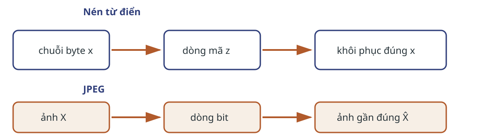
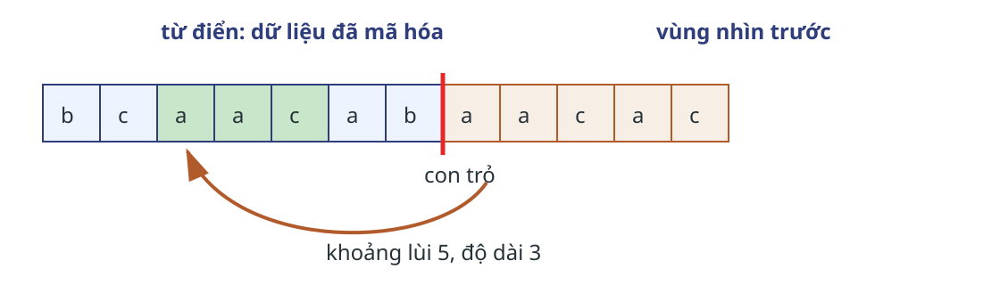
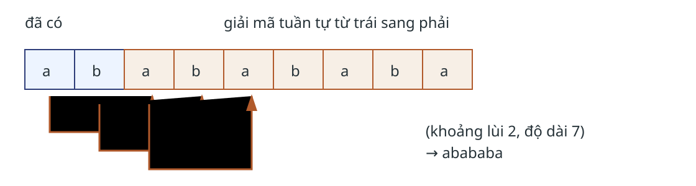
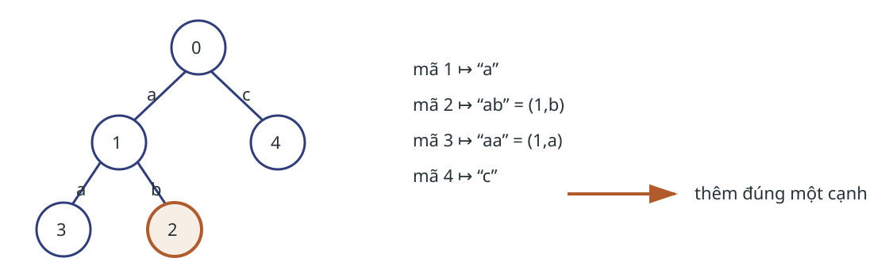
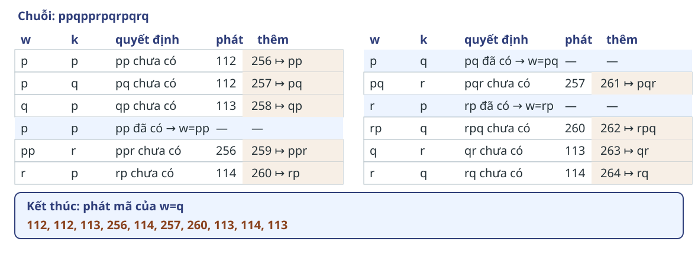
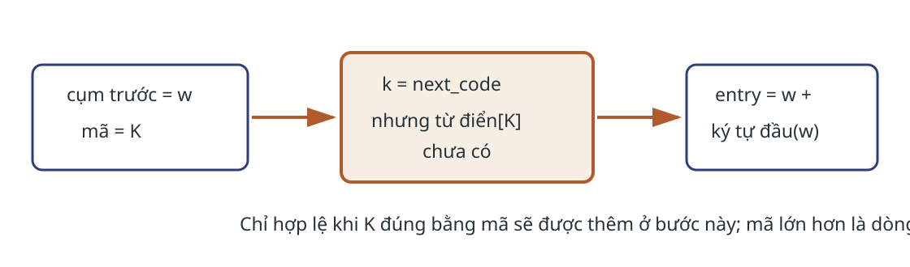
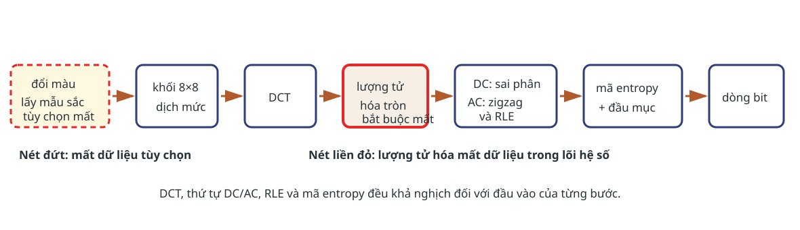
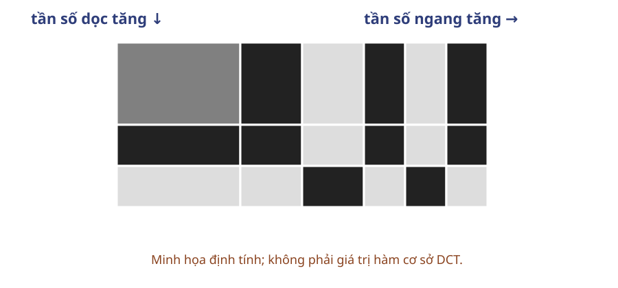

Trường Đại học Công nghệ · Đại học Quốc gia Hà Nội
Mục tiêu học tập
Mã hóa và giải mã LZ77, LZ78, LZW trên một chuỗi ngắn.
Giải thích phép sao chép chồng lấn và trường hợp mã LZW chưa có.
Phân biệt từ điển cửa sổ với từ điển cụm tăng dần.
Theo dõi đường ống JPEG qua DCT, lượng tử hóa và quét zigzag.
Chọn đặc tả khôi phục phù hợp với kiểu dữ liệu.
Hai đặc tả khôi phục

Sai một byte phá đặc tả của LZ. Sai số có kiểm soát là một phần của đặc tả JPEG.
LZ77: trỏ về dữ liệu vừa thấy
Một luồng nhật ký lớn phải nén trong một lượt. Bộ nén không thể giữ toàn bộ lịch sử nên chỉ duy trì một cửa sổ hữu hạn.
Đầu ra
Bộ ba tham chiếu và ký tự kế tiếp.
Giới hạn
Bộ nhớ theo cửa sổ; tìm cụm khớp chi phối thời gian mã hóa.
Cửa sổ chia dữ liệu thành hai miền

Hai dạng bộ ba
Ký tự thô
$(0,0,c)$ ghi trực tiếp ký tự $c$.
Tham chiếu
$(d,\ell,c)$ chép $\ell$ ký tự từ khoảng lùi $d$, rồi ghi $c$.
Nếu cụm khớp chạm cuối dữ liệu, $c=EOS$ và bộ giải mã không phát ký hiệu này.
Vết mã hóa giữ ba trạng thái
Đã xử lý
Tiền tố nhìn trước
Phát
rỗng
aacaacabc…
$(0,0,a)$
a
acaacabc…
$(1,1,c)$
aac
aacabc…
$(3,4,b)$
Bộ ba thứ ba chép tuần tự bốn ký tự từ khoảng lùi ba.
Chọn cụm khớp dài nhất
Literal: $d=\ell=0$. Tham chiếu: $1\le d\le\min(W,|output|)$, $1\le\ell\le L$.
while còn ký tự chưa mã hóa:
tìm cụm dài nhất khớp tiền tố vùng nhìn trước
nếu không khớp: phát (0, 0, ký_tự_đầu)
nếu có: phát (d, ℓ, ký_tự_kế hoặc EOS)
trượt qua ℓ + 1 ký tự, hoặc ℓ nếu c = EOS
Sao chép chồng lấn mở rộng cụm tuần hoàn

Giải mã không cần tìm kiếm
for mỗi (d, ℓ, c):
nếu ℓ=0: require d=0 và c thuộc Σ
nếu ℓ>0: require 1 ≤ d ≤ min(W, |output|), 1 ≤ ℓ ≤ L
và c thuộc Σ ∪ {EOS}
lặp ℓ lần: xuất output[|output| − d]
nếu c ≠ EOS: xuất c
nếu c = EOS: dừng
Hai nhánh đều bảo toàn lịch sử
Bất biến: trước mỗi bộ ba, cửa sổ giải mã bằng hậu tố tương ứng của dữ liệu gốc.
Token thường
Chép $\ell$ ký tự, phát $c\in\Sigma$, rồi chuyển sang token kế.
Token kết thúc
Chép $\ell$ ký tự, không phát $EOS$ và dừng.
Do đó bộ giải mã khôi phục đúng toàn bộ chuỗi.
Cửa sổ quyết định chi phí
Đại lượng
Cận hoặc tác động
Mã hóa vét cạn
$O(nWL)$ khi thử tối đa $W$ vị trí, so tối đa $L$ ký tự
Giải mã
$O(n)$ theo số ký tự đầu ra
Bộ nhớ làm việc
$O(W+L)$ cho cửa sổ và vùng nhìn trước
Chi phí token
Tham chiếu có lợi khi bit cho $d,\ell,c$ ít hơn dữ liệu thay
Kiểm tra bộ ba chồng lấn
Câu hỏi: Đầu ra đang kết thúc bằng ab. Bộ ba $(2,7,c)$ bổ sung chuỗi nào? Vì sao không thể đọc bảy ký tự từ một ảnh chụp cố định của hai ký tự nguồn?
LZ78: tích lũy các cụm đã học
Một luồng ký hiệu có cụm lặp cách xa nhau và chỉ được đọc một lượt. Cửa sổ LZ77 có thể quên cụm cũ; LZ78 giữ từ điển tăng trong toàn luồng.
Đầu ra
Cặp mã cụm và ký tự mới.
Giới hạn
Từ điển tăng dần; định dạng phải quy định khi đầy.
Mỗi cụm mới thêm đúng một ký tự

Cụm mới = cụm đã biết + một ký tự mới.
Bốn cặp đầu tạo cùng một từ điển
Tiền tố còn lại
Phát
Mục mới
Chuỗi đã xử lý
aabaac…
$(0,a)$
$D[1]=a$
a
abaac…
$(1,b)$
$D[2]=ab$
aab
aac…
$(1,a)$
$D[3]=aa$
aabaa
cabc…
$(0,c)$
$D[4]=c$
aabaac
Hai phía dùng cùng phép cập nhật
Mã hóa
D[0] ← ε; next ← 1
while còn dữ liệu:
w ← cụm dài nhất khớp
nếu hết sau w: phát (mã(w), EOS); dừng
c ← ký tự sau w; phát (mã(w), c)
D[next] ← w+c; next++
Giải mã
D[0] ← ε; next ← 1
for mỗi (i, c):
require i có trong D
nếu c=EOS: xuất D[i]; dừng
phrase ← D[i]+c; xuất phrase
D[next] ← phrase; next++
Quy nạp có hai nhánh token
Cơ sở: hai phía có $D[0]=\epsilon$.
Token thường $(i,c)$: cùng tạo $D[i]+c$, xuất cụm và thêm cùng mục.
Token $(i,EOS)$: xuất $D[i]$, không phát $EOS$, không thêm mục và dừng.
Hai phía khôi phục cùng tiền tố; token cuối khép chuỗi.
Từ điển toàn luồng cần biểu diễn gọn
Lựa chọn khi đầy
Hệ quả
Dừng thêm
Mã hợp lệ; không học cụm mới
Khởi tạo lại
Thích nghi lại; phải báo hiệu đồng bộ
Tăng độ rộng
Giữ thêm cụm; mỗi mã tốn nhiều bit hơn
Với trie/băm phù hợp: thời gian gần tuyến tính hoặc kỳ vọng theo $n$; $O(M)$ bộ nhớ cho $M$ mục dạng (cha, ký tự).
Kiểm tra phần còn lại của vết LZ78
Câu hỏi: Từ trạng thái sau Z02, mã hóa phần abcabcb. Hai cặp kế tiếp là gì, $D[5]$, $D[6]$ bằng gì và chuỗi đầy đủ được khôi phục ra sao?
LZW: bỏ ký tự khỏi cặp LZ78
Một luồng byte lớn được đọc một lượt. LZW nạp sẵn bảng chữ cái nên chỉ phát mã cụm; đổi lại, hai phía phải quản lý cùng từ điển và độ rộng mã.
Khởi tạo
$D[0..255]$ là các byte; next_code=256.
Cầu nối
LZ78 phát $(i,c)$; LZW suy ra ký tự đầu của cụm kế.
Vết mã hóa ghi cả lần kéo dài

Mã hóa khái quát hóa vết chạy
D[0..255] ← các byte; next_code ← 256
w ← byte đầu
for mỗi byte kế k:
nếu w+k có trong D: w ← w+k
ngược lại: phát mã(w); D[next_code] ← w+k
next_code++; w ← k
phát mã(w)
Giải mã dựng lại vết mã hóa
Từ mã đầu W02: $112\mapsto p$, rồi mã $112\mapsto p$ cho phép thêm $D[256]=pp$; mã $113\mapsto q$ cho phép thêm $D[257]=pq$.
old ← mã đầu; w ← D[old]; xuất w
for mỗi mã k đã có trong D:
entry ← D[k]; xuất entry
D[next_code] ← w + first(entry)
next_code++; w ← entry
Mã kế có thể đến trước mục từ

Giải mã đầy đủ giữ hai phía đồng bộ
old ← mã đầu; w ← D[old]; xuất w
for mỗi mã k:
nếu k có trong D: entry ← D[k]
nếu k = next_code: entry ← w + first(w)
nếu k > next_code: báo lỗi
xuất entry; D[next_code] ← w + first(entry)
next_code++; w ← entry
Bất biến: trước mỗi mã, hai phía có cùng từ điển và cùng next_code.
Độ rộng mã và biểu diễn từ điển
Khởi tạo mã byte 0–255 và next_code=256.
Sau mã $2^b-1$, chuyển sang $b+1$ bit trước mã kế.
Với băm phù hợp, mã hóa có thời gian kỳ vọng gần $O(n)$.
$O(M)$ bộ nhớ nếu mỗi mục lưu (cha, ký tự); không nối và chép cả cụm.
Kiểm tra mã chưa có
Câu hỏi: Bộ giải mã có cụm trước $w=\texttt{aba}$ và next=271. Mã kế là 271 nhưng chưa có trong từ điển. Cụm cần xuất và mục từ cần thêm là gì?
JPEG: giảm chi tiết khó nhận thấy
Một kho ảnh lớn cần giảm dung lượng lưu trữ và băng thông. Khôi phục đúng từng mẫu ảnh không còn là yêu cầu; sai số phải được điều khiển.
Đầu ra
Ảnh gần ảnh gốc theo mức chất lượng đã chọn.
Không phù hợp
Dữ liệu nhãn, văn bản trong ảnh hoặc phép đo cần bảo toàn tuyệt đối.
Sai số và tốc độ bit cùng tạo đặc tả
Tốc độ bit
Số bit của dòng nén hoặc bit trên mỗi điểm ảnh.
Độ méo
Khoảng cách giữa ảnh gốc $X$ và ảnh tái tạo $\hat X$.
$D_{MSE}=\frac1N\sum_{i=1}^{N}(X_i-\hat X_i)^2$
Chọn chất lượng là chọn một điểm trên đánh đổi tốc độ–độ méo.
Hai vị trí có thể làm mất dữ liệu

Khối 8×8 tạo đơn vị xử lý cục bộ
Đổi ảnh sang thành phần độ chói và sắc độ.
Có thể lấy mẫu thưa hơn ở kênh sắc theo định dạng.
Chia mỗi thành phần thành khối $8\times8$.
Dịch mẫu về quanh 0 trước khi biến đổi.
Biên khối giúp tính cục bộ nhưng có thể lộ thành ô khi lượng tử mạnh.
Trực giác định tính về tần số không gian

Ảnh tự nhiên thường dồn phần lớn năng lượng vào một số hệ số tần số thấp.
Giải mã entropy → khôi phục DC/AC → nhân $Q_{u,v}$ → IDCT → hoàn nguyên mức và màu.
Chi phí tỉ lệ với số điểm ảnh
Bước
Chi phí theo mỗi khối 8×8
Bộ nhớ làm việc
DCT/IDCT
hằng số phép toán cho khối cố định
một vài khối
Lượng tử, zigzag
64 phép chia/làm tròn và 64 vị trí
64 hệ số
Toàn ảnh $N$ mẫu
$\Theta(N)$ với khối cố định
có thể xử lý theo dải
Chất lượng và kích thước đầu ra phụ thuộc ảnh cùng bảng lượng tử, không chỉ thời gian chạy.
Kiểm tra đường ống JPEG
Câu hỏi: Bước nào luôn mất dữ liệu trong lõi hệ số, bước nào có thể mất dữ liệu trước DCT? Sau lượng tử, DC và AC được biến đổi thế nào trước mã entropy?
Chọn cấu trúc theo nguồn lặp và đặc tả
Phương pháp
Nguồn lặp
Trạng thái
Khôi phục
LZ77
chuỗi gần vị trí hiện tại
cửa sổ hữu hạn
đúng từng ký tự
LZ78
cụm đã học từ đầu luồng
từ điển cụm
đúng từng ký tự
LZW
cụm với bảng chữ cái biết trước
từ điển mã cụm
đúng từng ký tự
JPEG
tương quan không gian
khối và hệ số
ảnh gần đúng
Kiểm tra lựa chọn
Câu hỏi: Chọn một phương pháp cho mỗi trường hợp: nhật ký lặp cục bộ với cửa sổ hữu hạn; luồng ký hiệu cần cặp $(i,c)$; luồng byte có bảng chữ cái nạp sẵn và chỉ phát mã; kho ảnh xem trước chấp nhận sai số.
Bài tập củng cố
Năm nhiệm vụ giữ nguyên câu hỏi hoặc vết khuyết của CMU 15-499.
LZ77
LZ78 và LZW
Biến đổi mất dữ liệu
Hoàn tất vết mã hóa LZ77
Chuỗi: aacaacabcabaaac. Từ điển tối đa 6 ký tự; vùng nhìn trước tối đa 4 ký tự.
Ba bộ ba đầu: $(0,0,a)$, $(1,1,c)$, $(3,4,b)$.
Đánh dấu cửa sổ sau mỗi bộ ba.
Điền các bộ ba còn lại bằng cụm khớp dài nhất.
Nêu bước nào dùng sao chép chồng lấn.
Giải mã một bộ ba LZ77
Từ điển hiện tại: abcd. Theo CMU, vị trí đánh số từ 0; vị trí 2 là ký tự c. Token là $(2,9,e)$.
Viết chín ký tự được sao chép theo thứ tự.
Viết chuỗi sau khi thêm e.
Chỉ ra ký tự nào đọc từ dữ liệu vừa tạo.
Hoàn tất vết mã hóa LZ78
Chuỗi: aabaacabcabcb. Khởi tạo $D[0]=\epsilon$.
Bốn cặp đầu: $(0,a),(1,b),(1,a),(0,c)$.
Điền các cặp còn lại.
Vẽ cây từ điển sau mỗi cặp.
Giải mã lại để kiểm tra.
Xử lý mã LZW chưa có
Bộ giải mã vừa xuất cụm $w$. Mã kế là $k=\texttt{next\_code}$, nhưng $D[k]$ chưa tồn tại.
Chứng minh cụm cần xuất là $w+first(w)$.
Viết mục từ mới $D[k]$.
Nêu khi nào mã chưa có phải bị báo lỗi.
Chọn một biến đổi cho nén mất dữ liệu
CMU yêu cầu một biến đổi có:
giải mã nhanh;
nhiều hệ số gần 0;
hàm cơ sở đơn giản;
dồn năng lượng trên nhiều tín hiệu trong miền ứng dụng.
Giải thích vai trò của từng tiêu chí.
Đề xuất phép đo để so sánh hai biến đổi trên cùng tập ảnh.